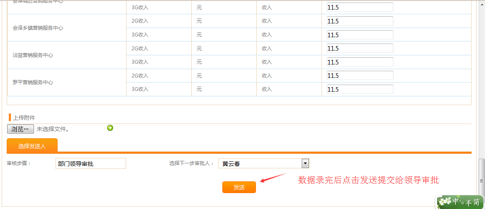
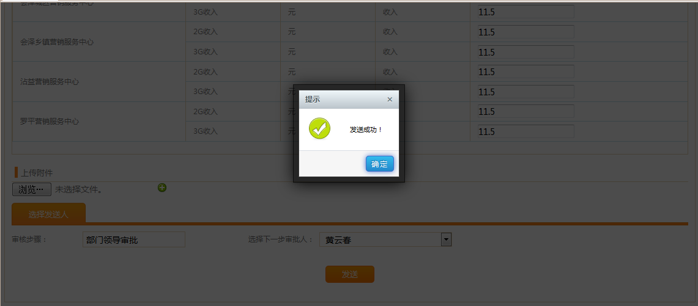
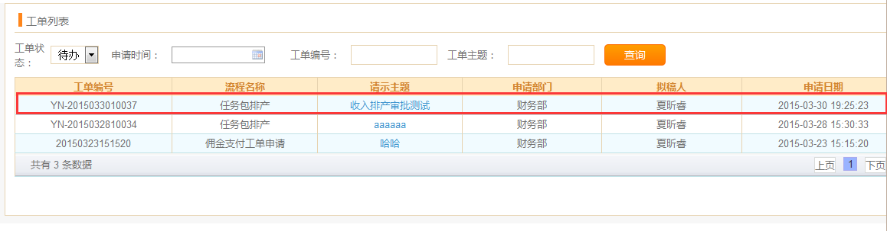
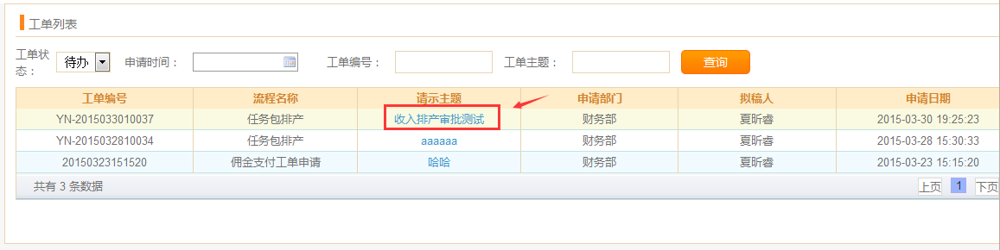
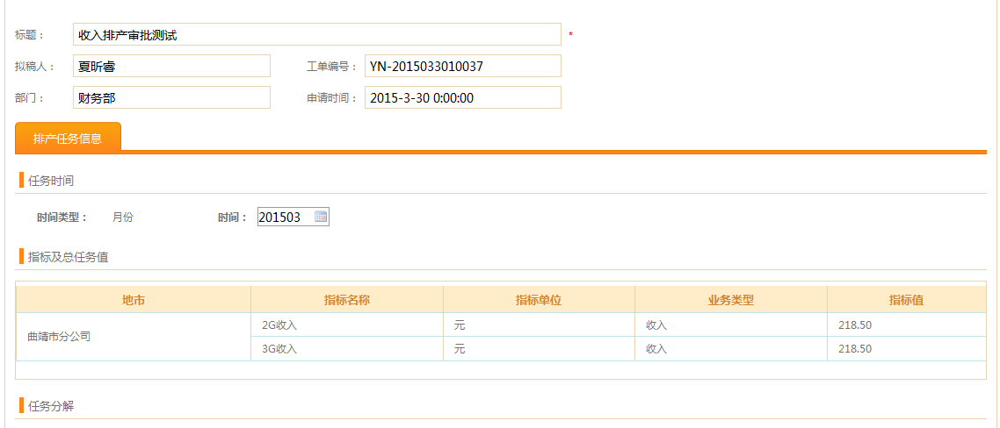
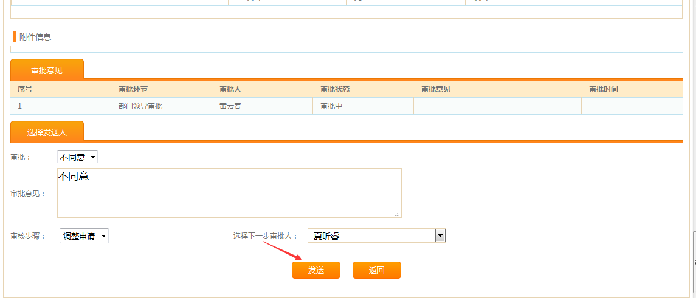
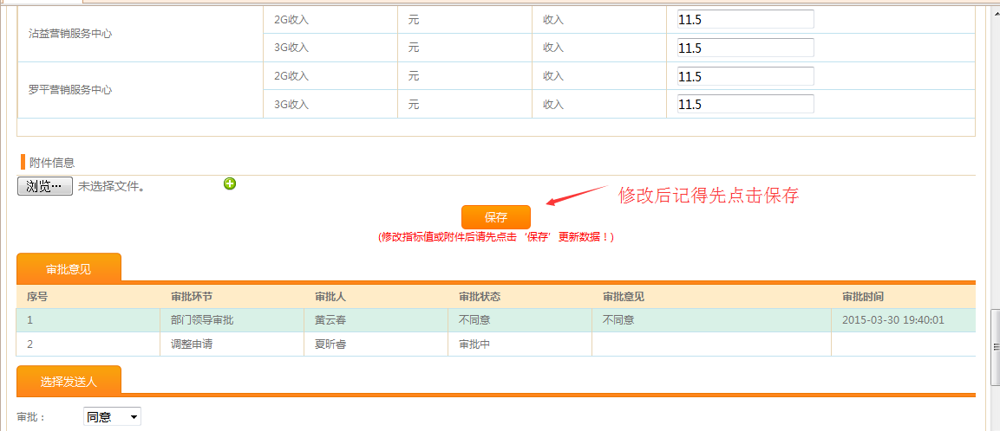
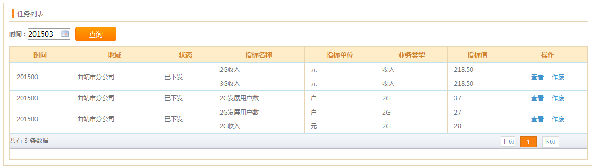
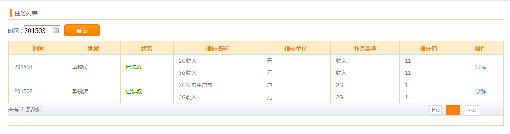

地市相关业务人员在这里新增宽带收入的任务排产，并提交领导审批，审批通过后将任务下发至营服中心。
【任务管理】—【任务排产】—【宽带收入】




领导登录系统后在【经营管控】-【工单管理】-【工单列表】中就能看到刚刚发送的待办，如下图所示：



4、当选择审批同意时，则将任务下发至下级地域，整个审批流程结束；选择不同意时，则将工单打回至拟稿人，拟稿人可在【经营管控】-【工单管理】-【工单列表】查看被打回的工单，点击进入详情界面可以修改工单保存后继续发送领导审批或是直接选择不同意作废此工单。

拟稿人查看工单界面：

选择同意重新发送至领导审批：

或选择不同意将此工单作废:

地市相关业务人员在这里新增2G、3G、4G和固网发展数的任务排产，并提交领导审批，审批通过后将任务下发至营服中心。
【任务管理】—【任务排产】—【销量排产】
操作流程基本和收入排产的一样，只是在选择指标时，只会列出2G、3G、4G和固网的发展数指标选择。
地市查看自己新增的排产任务（注：地市只能在审批通过任务下发后才能在此看到自己创建的任务）,营服中心在此查看地市下发的排产任务，分配了权限的相关人员有领取、拒绝、分解下发和作废操作。
【任务管理】—【我的任务】—【任务列表】



填写完后点击“保存”即可将任务下发至渠道经理。

地市可对已拒绝的任务进行修改重排：


渠道经理查看任务列表界面
【任务管理】—【我的任务】—【任务列表（渠道经理）】
打开页面如下：
渠道经理点分解之后可以给相应的代理商人员分配任务！
Created with the Personal Edition of HelpNDoc: Free HTML Help documentation generator